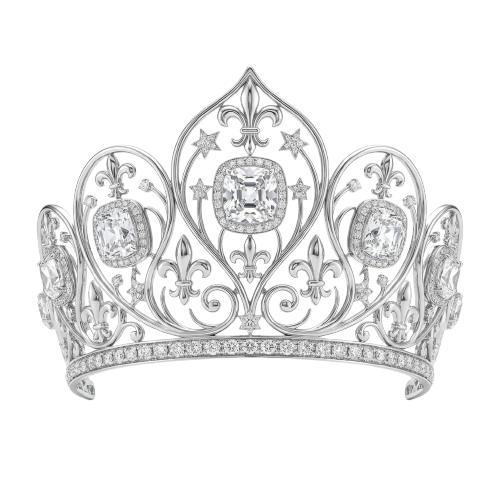

Jour 7 : Les 7 Merveilles
Un bijou précieux a disparu...
Explore les 7 merveilles du monde pour le retrouver !
(Clique sur l'endroit suspect pour trouver l'indice...)
👑
Retour au Calendrier

Même les 7 merveilles du monde réunis ne t'arrivent pas à la hauteur
Fermer